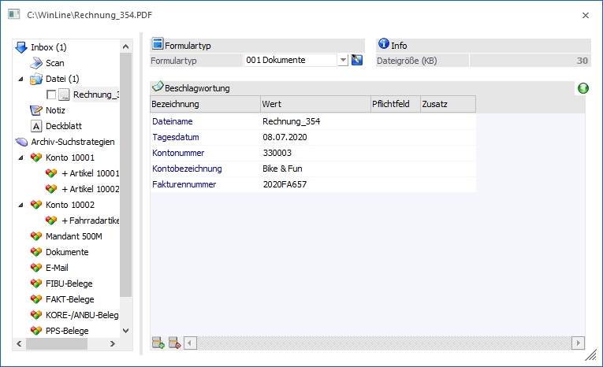
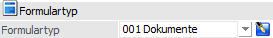
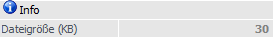
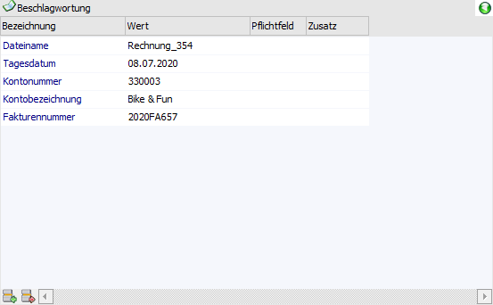
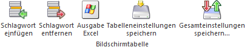

Voraussetzung, dass archivierte Dokumente schnell wiedergefunden werden können, ist, dass Archiveinträge eine Beschlagwortung aufweisen. Anhand dieser Zuordnungen (Schlagwörter mit Inhalt) kann gezielt nach Archiveinträgen gesucht werden.

Im rechten Bereich des Fensters "Neuer Archiveintrag" werden die jeweiligen Informationen zum gerade markierten Archiveintrag (aus "Inbox" oder "Archiv - Suchstrategien") angezeigt.
Formulartyp

Ø Formulartyp
Oberhalb der Beschlagwortungstabelle kann aus der Auswahlbox ein Formulartyp gewählt werden. Dieses kann erfolgen, bevor ein neuer Archiveintrag hinzugefügt wird oder nachdem bereits der neue Eintrag hinzugefügt wurde. Durch die Formulartypen können…
ü … Schlagwörter hinzugefügt werden.
ü … Schlagwörter vorbelegt werden.
ü ... Archiveinträge in den Archivanzeigen mit einem individuellen Icon versehen werden.
ü … CRM-Aktionen bzw. CRM-Workflows ausgeführt werden.
Hinweis
Die einzelnen Formulartypen werden im Programm WinLine ADMIN über den Menüpunkt "Archiv - Formulartypen - Bereich "Anlage"" definiert. An dieser Stelle wird auch bestimmt, welche Auswirkungen ein Formulartyp hat.
Des Weiteren ist es möglich, den Formulartyp aufgrund der Dateierweiterung (z.B. DOC, XLS, PDF etc.) des neuen Archiveintrages automatisch vorbelegen zu lassen. Diese Zuweisung erfolgt über den Bereich "Dateierweiterung". An dieser Stelle (Register "erlaube Formulartypen") erfolgt auch die Definition von "erlaubten Formulartypen" pro Dateierweiterung.
Achtung
Handelt es sich um eine E-Mail, welche mit Hilfe des Addin-Buttons "WinLine Archiv-Import" aus Microsoft Outlook an die WinLine übergeben wird, dann greift für die automatische Formulartypenzuweisung zuerst die in den Formulartypen hinterlegte "Kategorie".
Anwendungsmöglichkeiten
ü Es wird ein neuer Archiveintrag hinzugefügt, über die Dateierweiterung (den Dokumententyp) der Formulartyp erkannt und automatisch aus der Auswahlbox gewählt. In weiterer Folge werden dadurch auch die Schlagwörter hinzugefügt.
Beispiel
Für die Dateierweiterung TIF (Grafikdatei) wurde der Formulartyp "003 - Grafikdatei" mit den Schlagwörtern "Kontonummer", "Kontobezeichnung" und "Tagesdatum" gewählt. Wird nun eine gescannte Rechnung (TIF-Datei) archiviert, dann wird der Formulartyp automatisch auf "003 - Grafikdatei" gestellt und die 3 Schlagwörter in der Beschlagwortungstabelle eingefügt.
Hinweis
Durch die Tabellenbuttons können in der Beschlagwortungstabelle bestehende Schlagwörter jederzeit hinzugefügt oder bestehende Schlagwörter entfernt werden.
ü Zusätzlich zum erkannten Dokumententyp (Dateierweiterung) sollen noch weitere Schlagwörter hinzugefügt werden. Aus der Auswahlbox können nun jene Formulartypen gewählt werden, die für den Dokumententyp als "erlaubte Formulartypen" hinterlegt sind.
Beispiel
Für die Dateierweiterung TIF
(Grafikdatei) wurde der Formulartyp "Grafikdatei" mit den Schlagwörtern
"Kontonummer", "Kontobezeichnung" und "Tagesdatum" gewählt.
Wird nun eine
gescannte Rechnung (TIF-Datei) archiviert, dann wird der Formulartyp automatisch
auf "003 - Grafikdatei" gestellt und die 3 Schlagwörter in der
Beschlagwortungstabelle eingefügt.
Da es sich um eine Rechnung handelt,
müssen auch noch Werte wie "Artikelnummer", "Artikelbezeichnung",
"Rechnungsnummer" und "Rechnungsdatum" verwaltet werden. Dazu wird dann der
ebenfalls definierte Formulartyp "006 - Rechnung" ausgewählt, der genau diese
Beschlagwortungen enthält. Somit können nun insgesamt 7 Beschlagwortungen
eingetragen werden.
Hinweis
Durch die Tabellenbuttons können in der Beschlagwortungstabelle bestehende Schlagwörter jederzeit hinzugefügt oder bestehende Schlagwörter entfernt werden.
ü Noch bevor ein neuer Archiveintrag hinzugefügt wird, kann bereits ein Formulartyp ausgewählt werden. Handelt es sich beim neuen Archiveintrag dann um einen "erlaubten Formulartypen", so wird auch diese Beschlagwortung - lt. gewähltem Formulartyp - herangezogen. Handelt es sich NICHT um einen erlaubten Formulartypen, so wird die Standardzuweisung des Dokumententypen verwendet.
Beispiel
Für die Dateierweiterung "DOCX" (Word Dokument)
wurde der Standardformulartyp "005 - Word-Datei" hinterlegt. Zusätzlich wurde
als "erlaubter Formulartyp" der Formulartyp "008 - Kundeninfo"
definiert.
Wird nun aus der Auswahllistbox der Formulartyp "008 - Kundeninfo"
gewählt, und als neuer Archiveintrag eine Datei mit der Endung "DOCX"
hinzugefügt, so wird auch die Beschlagwortung des Formulartypen "008 -
Kundeninfo" herangezogen.
Wird als neuer Archiveintrag z.B. eine Datei mit
der Endung "XLSX" gewählt, so würde der gewählte Formulartyp "008 - Kundeninfo"
mit dem Standardformulartyp des Dokumententyps "XLSX" überschrieben
werden.
Hinweis
Durch die Tabellenbuttons können in der Beschlagwortungstabelle bestehende Schlagwörter jederzeit hinzugefügt oder bestehende Schlagwörter entfernt werden.
Hinweis
Zur Anwendung kommen die Formulartypen auch bei der Archivierung von externen Dokumenten. Dabei können die hier angelegten Formulartypen ausgewählt werden, wodurch die benötigte Beschlagwortung automatisch angezeigt wird.
Wenn während der Archivierung mehrere Formulartypen nacheinander ausgewählt werden, dann erfolgt die Anzeige additiv.
Beispiel
Es wird manuell bzw. automatisch während der Archivierung der Formulartyp "005 - Word-Datei" ausgewählt, in welchem die Beschlagwortung für "Kontonummer", Kontoname" und "Tagesdatum" hinterlegt ist. Wird nun der Formulartyp "006 - Rechnung" ausgewählt, werden die dort hinterlegten Beschlagwortungen (z.B. "Artikelnummer" und "Artikelbezeichnung") hinzugefügt.
Info

Ø Dateigröße
An dieser Stelle wird die Größe des neuen Archiveintrages in Kilobyte angezeigt.
Ø neue Version erzeugen
Mit dieser Option kann bestimmt werden, ob eine neue Version bei einem bestehenden Archiveintrag erzeugt (Option "aktiviert") oder ob die aktuellste Version des bestehenden Archivdokuments überschrieben bzw. ersetzt (Option "deaktiviert") werden soll.
Hinweis
Diese Option steht nur bei Einträgen zur Verfügung, welche in dem Inbox-Bereich "bestehendes Dokument" aufgeführt werden.
Tabelle "Beschlagwortung"

In der Tabelle können bereits bestehende Schlagwörter gelöscht oder mit einem Wert hinterlegt werden, sowie neue Schlagwörter hinzugefügt werden.
Ø Schlagwort (Bezeichnung)
An dieser Stelle wird das Schlagwort hinterlegt, wobei immer die Bezeichnung angezeigt wird. Die Auswahl erfolgt dabei über Eingabe der Schlagwortbezeichnung bzw. der Schlagwortnummer (inklusive Autovervollständigung) oder per Matchcode.
Ø Wert
In diesem Feld wird das Schlagwort mit einem Inhalt versehen. Nach der Kombination aus Schlagwort + Schlagwortinhalt kann im späteren Verlauf z.B. in dem Programm "Archiveintrag suchen" gesucht werden.
Beispiel
Eine Rechnung (Rechnungsnummer "2020FA657") soll archiviert werden. Damit später über die Rechnungsnummer nach dem Archiveintrag gesucht werden kann, wird der Rechnung das Schlagwort "022 - Fakturennummer" zugeordnet und in dem Feld "Wert" die Nummer "2020FA657" hinterlegt.
Ø Pflichtfeld
Durch ein
 werden jene Schlagwörter
gekennzeichnet, die zwingend ausgefüllt werden müssen. Ohne eine Hinterlegung in
dem Feld "Wert" ist eine Archivierung nicht möglich.
werden jene Schlagwörter
gekennzeichnet, die zwingend ausgefüllt werden müssen. Ohne eine Hinterlegung in
dem Feld "Wert" ist eine Archivierung nicht möglich.
Hinweis
Ob es sich bei dem Schlagwort um ein Pflichtfeld handelt wird über den Formulartyp definiert.
Ø Übernahme
Wenn gemäß dem Formulartyp ein CRM-Fall erstellt werden soll, dann wird in dieser Spalte angezeigt, welche Beschlagwortungen in den CRM-Fall übergeben werden.
Ø Workflowbezeichnung
In dieser Spalte wird die Bezeichnung des CRM-Feld angezeigt, in welches beim Erzeugen des CRM-Falls die Beschlagwortung übergeben wird.
Ø Zusatz
Bei dem Schlagwort "031 - E-Mail" steht an dieser Stelle eine Auswahlbox zur Verfügung um den E-Mailadressen-Typ zu bestimmen. Folgende Einstellungen stehen dabei zur Auswahl:
ü 0 - Absender
ü 1 - Empfänger
ü 2 - CC
ü 3 - BCC
Ø Beschlagwortungs-Info anzeigen / ausblenden
Im oberen rechten Bereich der Beschlagwortungstabelle kann mit diesen Buttons ein Info-Bereich für die aktuelle Beschlagwortungszeile angezeigt bzw. ausgeblendet werden.
Hinweis
Bei den folgenden Schlagwörtern werden im Info-Bereich entsprechende Stamm- oder Bewegungsdaten angezeigt:
ü 001 - Kontonummer
ü 005 - Kostenstelle
ü 006 - Kontaktnummer
ü 030 - Projektnummer
ü 041 - Artikelnummer
ü 043 - Belegnummer AG
ü 044 - Belegnummer AB
ü 045 - Belegnummer LS
ü 046 - Belegnummer FA
ü 051 - Vertreternummer
ü 061 - Anlage
ü 071 - Kostenstelle
ü 072 - Kostenträger
ü 073 - Kostenart
ü 081 - Prod. Auftragsnummer
ü 085 - Ressourcennummer
ü 086 - Arbeitnehmer
ü 091 - DN-Nummer
Tabellenbuttons

Ø Schlagwort einfügen
Durch Anklicken dieses Buttons kann ein weiteres Schlagwort am Ende der Tabelle hinzugefügt werden.
Ø Schlagwort entfernen
Durch Anklicken dieses Buttons wird das aktive Schlagwort entfernt.
Ø Ausgabe Excel
Durch Anwahl des Buttons "Ausgabe Excel" wird der Inhalt der Tabelle an Microsoft Excel übergeben.
Ø Tabelleneinstellungen speichern
Die Spalten einer Tabelle können grundsätzlich an beliebige Positionen verschoben, bzw. in der Breite entsprechend angepasst werden. Durch Anwahl des Buttons "Tabelleneinstellungen speichern" werden die Einstellungen benutzerspezifisch gespeichert und bei dem nächsten Aufruf des Programmpunktes wieder vorgeschlagen.
Ø Gesamteinstellungen speichern
Im Gegensatz zu "Tabelleneinstellungen speichern" können mit "Gesamteinstellungen speichern" mehrere Tabellenaufbauten gespeichert und nach Wunsch geladen werden. Zusätzlich werden Sonderfunktionen der Tabelle (z.B. "Spalte gruppieren") ebenfalls bei der Speicherung bedacht.